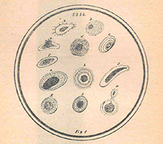
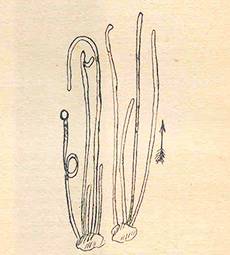

Referencias
- Brailovsky, H. y B.Gómez (compls). 1993. Colecciones Zoológicas. Colecciones Biológicas Nacionales, Instituto de Biología, Universidad Nacional Autónoma de México, México, D. F. 196 p.
- Cifuentes, L.J., P. Torres y M. Frías. 2003. El océano y sus recursos, VI. Bentos y necton. Fondo de cultura Económica, serie La ciencia para todos. México, 407 p.
- Cuevas, C.C. 2005. Editorial. Herreriana 1(1): 1.
- Ledesma-Mateos I. y A. Barahona. 1999. Alfonso Luis Herrera e Isaac Ochoterena: la Institucionalización de la Biología en México. Historia mexicana 48 (3): 635-674.
- Martínez, S.S., et.al. 2007. una nueva identidad para los farmacéuticos: la Sociedad Farmacéutica Mexicana en el cambio de siglo (1890-1919). Dynamis 27:263-285.
- Negrón, M.A. 1994. Alfonso L. Herrera: a mexican pioneer in the study of chemical evolution. Journal of Biological Physics 20:11-15.
Alfonso L. Herrera
1868 - 1942
Alfonso Luis Herrera López fue un destacado científico, considerado pilar de la biología moderna en México, y uno de los primeros investigadores de este país en estudiar sistemáticamente el origen de la vida. Hijo de Alfonso Herrera Fernández de San Salvador y Adela López Hernández. Nació en la ciudad de México en 1868(9) y falleció en 1942.
Estudió farmacia en la Escuela Nacional de Medicina, pero a partir de su ingreso como ayudante al Museo Nacional de Historia Natural (MNHN) en 1889 se interesó en la biología. Ahí realizó una serie de catálogos que sistematizaron las diferentes colecciones de vertebrados existentes en el museo. En 1897 se casó con María Estrada Delgado.
Entre otros quehaceres se dedicó a la docencia, fundando en 1902 la primera cátedra de Biología general en la Escuela Normal para Maestros. Como herramienta para el curso escribió “Nociones de Biología”: primer libro de texto de biología en el país. En éste, expuso sus ideas evolucionistas e introdujo al país las del naturalista inglés Charles Darwin. Ahí además propone la “Plasmogenia”, ciencia que estudia el origen y evolución de la vida.
En 1906 su cátedra de biología fue suprimida por ser peligrosa para la juventud y las creencias.
En 1915 fue nombrado director del MNHN y como parte de su proyecto, creó la Dirección de Estudios Biológicos (DEB), y que posteriormente, se convirtió en el Instituto de Biología de la Universidad Nacional Autónoma de México.
Uno de los logros de la DEB fue el establecimiento en 1922 del Jardín Botánico del Bosque de Chapultepec y un año después, la creación del Parque Zoológico de Chapultepec, que actualmente lleva su nombre.
Sus trabajos fueron dados a conocer en publicaciones como Nueva Farmacopea Mexicana, Memorias de la Sociedad Científica Antonio Alzate, Anales del Museo Nacional, La Naturaleza, Science, entre muchas otras.
Para saber más…
Herrera estableció la Plasmogenia como una ciencia experimental que buscaba simular las propiedades físicas y químicas de un supuesto “protoplasma universal” empleando diferentes compuestos orgánicos e inorgánicos, que permitieran explorar sobre los procesos de la evolución orgánica que dieron origen a la vida.
Para la publicación de los resultados de esta ciencia se crearon la “Gaceta de Plasmogenia” (en español) y el “Bulletin du Laboratoire de Plasmogenie” (en francés), publicaciones que desaparecieron en 1942. Actualmente, muchas de las ideas que sostuvieron la Plasmogenia ya no son vigentes, pero es de rescatar que Herrera fue de los primeros investigadores en adentrarse en este campo.
Naturalistas siglo XIX
Aportación

La Plasmogenia. Nueva Ciencia del origen de la vida (1932), por Alfonso L. Herrera. Figura 4. Estearato de sodio

La Plasmogenia. Nueva Ciencia del origen de la vida (1932), por Alfonso L. Herrera. Figura 5. Partículas de percloruro de fierro y silicato de sodio al 10%. Germinaciones ascendentes.